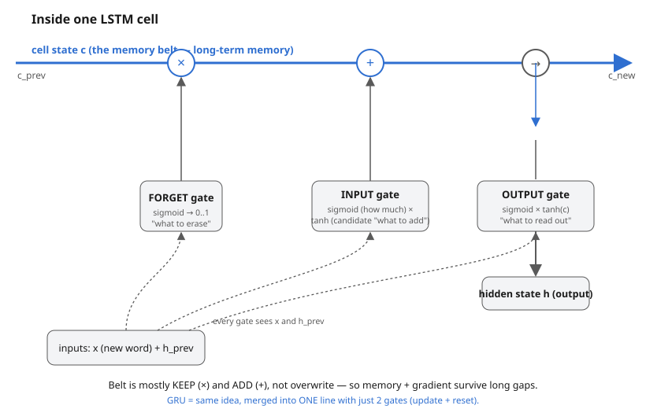
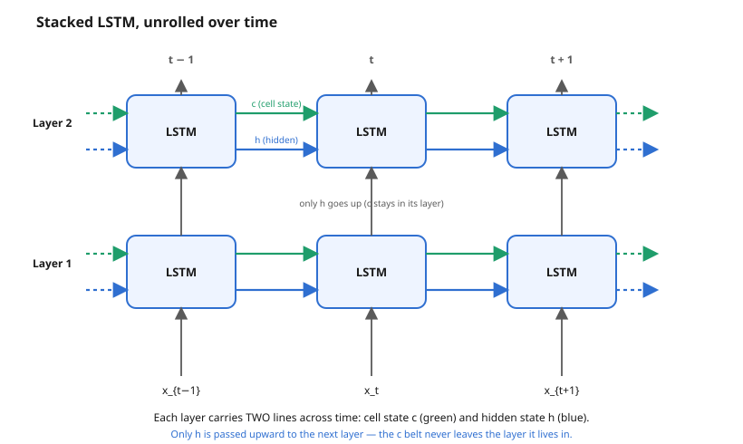

Long Short-Term Memory
An LSTM is an RNN cell that fixes vanishing gradients by adding a second memory line — the cell state — that information rides along with only gentle edits (keep + add) instead of being fully overwritten every step. Learned gates (sigmoid dials, 0→1) decide what to erase, what to write, and what to read. The name says it: it makes short-term memory able to act long-term.
#The two memories
- Cell state — the long-term memory. A "conveyor belt" running across all steps. It mostly gets multiplied (forget) and added to (input), never fully rewritten. That additive path is why information and gradients survive long gaps.
- Hidden state — the short-term memory / working output. What the cell exposes right now to predict and pass forward.
A vanilla RNN has only (hence it forgets). The LSTM's innovation is the added line.

#What a gate is
A gate is a tiny layer that outputs a number between 0 and 1 via sigmoid — a dial. 0 = block, 1 = let through. You multiply the dial against some information. The network learns to set the dial from context (it sees the new input and previous output ).
#The three gates
- Forget gate () — multiplies the belt to decide what to erase. Near 1 = keep the memory; near 0 = wipe it. (New subject in the sentence → drop the old one.)
- Input gate ( paired with a candidate) — decides what new content to add to the belt. The proposes candidate content; the sigmoid decides how much of it to write.
- Output gate () — decides how much of the belt to read out as the hidden state .
One step in words: look at and → forget some of the belt → add new content to the belt → read a filtered view as the output.
#Forward math (defined bottom-up)
Symbols: squashes to (a dial), to (signed content), = elementwise multiply, = concatenation, each = a learned matrix. = cell-state belt, = hidden state.
Define the four pieces first — each just reads :
- Forget dial — how much of the old belt to keep
- Input dial — how much new content to write
- Candidate — the proposed new content (signed → tanh)
- Output dial — how much of the belt to expose
Then assemble — update the belt (keep some old, add some new), then read it out:
Gradient highway: because the belt update is additive, — just the forget gate, not a matrix. Chained across time it's ; if the net learns the gradient survives undimmed (the "constant error carousel").
#Why it fixes vanishing gradients
In a plain RNN the backward chain multiplied at every hop and collapsed to ~0. In an LSTM the cell-state's backward term is roughly just the forget-gate value. If the network learns to hold that gate near 1, the gradient flows back across many steps almost undimmed. The gates create a near-multiplication-free highway for the gradient.
#Stacking layers
Stack LSTMs by feeding one layer's hidden-state sequence as the input sequence to the layer above. The wrinkle vs. a plain RNN stack: each layer carries two lines sideways through time — the cell state and the hidden state — but only is passed upward to the next layer. The belt is private to its layer and never leaves it.

So depth and time stay orthogonal: and flow left-to-right within a layer; only flows bottom-to-top across layers. Top layer's is read for predictions. num_layers in PyTorch's nn.LSTM builds this for you.
#30-second answer
An LSTM adds a long-term cell-state belt alongside the short-term hidden state, and three sigmoid gates (forget = erase, input = write, output = read). The belt carries memory by keep-and-add rather than overwrite, so both information and gradients survive long sequences. It does not change the loss (cross-entropy stays the same) — only the memory-update machinery.
#See also
- Recurrent Neural Networks — the base cell LSTM upgrades
- Gated Recurrent Unit — the leaner cousin (1 memory, 2 gates)
- Cross-Entropy Loss · Gradient Descent